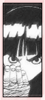
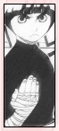

| » Character Analysis ;
Every character in Naruto is diverse. They all have their unpleasant pasts, but they fight everyday to become stronger. What's the purpose of having Lee in the middle of all this? What makes him so different from the other characters in the show? You'll notice that Lee is the only one who cannot use any genjutsu or ninjutsu moves. He also doesn't have any special powers such as advanced bloodlines, an inpenetrable sand shield, or a demon inside with immense amount of chakra to aid him. He doesn't have the looks, but he has the heart. He's here to prove that you don't have to be depend on fate to tell you which path to take. If destiny made you not as attractive and seemingly not as gifted as others, it's simply a test to see if you can overlook that. Even if you weren't blessed with special powers, you can find strength in something else, something that's less obvious. Lee's true strength is his willpower, his perseverance, his determination. Through this determination, he found his talent; hand-to-hand combat. Regardless of what people told him, that he can't be a good ninja without genjutsu or taijutsu, he pushed on, believing differently. Through hard work, he proved that you don't have to be 'special' to be successful. It's something we ourselves go through everyday. Most of us aren't born blessed with any special talents, or are we all geniuses. When little, most of us were probably taunted at for some thing or another. If there's one character in Naruto who seems the most realistic and whom we can relate to the most, it's Rock Lee. The difference between him and us, is that he has a hell of a lot more determination. But that's all he needs to succeed, and succeed he did. He shed light on the fact that you can do anything if you believe in yourself. And what did he lose by pushing himself? He isn't arrogant as hell and doesn't have an ego bigger than his head, nor does he have the strange desire to kill everyone but himself. He turned out just fine, if not better than most of the other genin. He went up against geniuses and won. He's one of the strongest genin, yet he retains a polite and modest attitude. He's one of the best examples of how fine a person can be. Yet, he's still only 13. He's maturity is way beyond his years. The overall idea that Lee's character tries to put out is, define your limitations, and they are yours. If you think you can't do something, you won't be able to because you lowered yourself to that limit. But if you try your darn hardest, you can achieve anything. Even through tough times, such as Lee's dual with Gaara, Lee never gave up. There were numerous times where it looked like he could not move another muscle. Yet, he stood up, faced his opponent, and fought on. He absolutely refuses to accept defeat until he's unconcious. A little over the top? It's just his way of saying, you don't have to be gifted or special to be strong. « reverse |
PRELUDE GENERAL Naruto Terms Chakra LEE First Glance Personality Techniques Fighting Style Transition Weaknesses Analysis RIVALRY vs. Sasuke vs. Neji vs. Gaara vs. Sound vs. Kimimaro RELATIONS Maito Gai Teammates Sakura Naruto EXTRAS Symbolism Seiyuu Quotations References EDEN Reasons Images Wallpapers Fanworks Graphics EPILOGUE Updates Linkage Credits Joined Contact Guestbook |